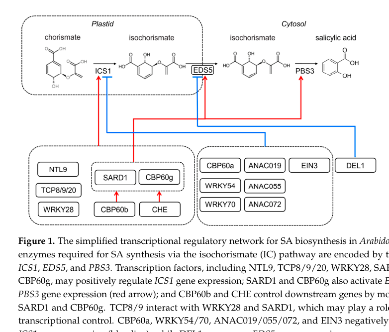

ICS1 (also known as SID2 / SALICYLIC ACID INDUCTION DEFICIENT 2 and EDS16 / ENHANCED DISEASE SUSCEPTIBILITY 16; AtIcs1) is a chloroplast stroma-localized isochorismate synthase (EC 5.4.4.2) that catalyzes the Mg2+-dependent, reversible isomerization of chorismate to isochorismate. This reaction is the committed and rate-limiting step of pathogen- and stress-induced salicylic acid (SA) biosynthesis in Arabidopsis. SA produced via the ICS/isochorismate pathway is required for both local and systemic acquired resistance (SAR) against biotrophic pathogens and for the transcriptional induction of pathogenesis-related (PR) genes. ICS1 is a monofunctional isochorismate synthase: it converts chorismate to isochorismate but does not itself carry out the subsequent conversion of isochorismate to SA, which requires additional enzymes. Isochorismate generated by ICS1 also feeds into phylloquinone (vitamin K1) biosynthesis, an essential cofactor for Photosystem I. Arabidopsis has a paralog, ICS2, that is also plastid-localized and enzymatically active but contributes less to SA and phylloquinone pools (unequal redundancy); single ics1 mutants are viable with severely reduced inducible SA, while ics1 ics2 double mutants are seedling lethal due to loss of phylloquinone. ICS1 expression is strongly induced by pathogen infection and, after prolonged chilling, by cold; through its control of SA levels it is genetically required for diverse SA-dependent physiological outputs including stomatal immunity and pathogen- and drought-triggered leaf abscission.
| GO Term | Evidence | Action | Reason |
|---|---|---|---|
|
GO:0008909
isochorismate synthase activity
|
IEA
GO_REF:0000120 |
ACCEPT |
Summary: Electronic annotation of the core catalytic activity, supported by InterPro family membership (isochorismate synthase / MenF-like), RHEA:18985 and EC 5.4.4.2. This is the well-established molecular function of ICS1 and is confirmed experimentally.
Reason: The catalytic activity is directly demonstrated biochemically with purified protein and matches the InterPro/EC mapping. This is a core function.
Supporting Evidence:
PMID:17190832
AtICS1 acts as a monofunctional isochorismate synthase (ICS), catalyzing the conversion of chorismate to isochorismate (IC) in a reaction that operates near equilibrium (K(eq) = 0.89).
file:ARATH/ICS1/ICS1-deep-research-falcon.md
a plastid-derived metabolite at the branch point of aromatic compound biosynthesis
|
|
GO:0009507
chloroplast
|
IEA
GO_REF:0000044 |
ACCEPT |
Summary: ICS1 carries an N-terminal chloroplast transit peptide (residues 1-45) and was shown by chloroplast import assays and immunolocalization to be a plastid stromal protein. Chloroplast localization is correct.
Reason: Directly supported by import assays and immunolocalization; consistent with the transit peptide annotated in UniProt.
Supporting Evidence:
PMID:17190832
we show that AtICS1 is a plastid-localized, stromal protein using chloroplast import assays and immunolocalization.
file:ARATH/ICS1/ICS1-deep-research-falcon.md
the ICS step is the only SA-biosynthetic step occurring in chloroplasts
|
|
GO:0009536
plastid
|
IEA
GO_REF:0000117 |
ACCEPT |
Summary: Plastid is the parent of chloroplast and is consistent with the experimentally demonstrated plastid stromal localization. Retained as a correct but less specific localization.
Reason: Correct localization, though less specific than the chloroplast/stroma annotation. IEA mapping to a broader term is acceptable.
Supporting Evidence:
PMID:17190832
we show that AtICS1 is a plastid-localized, stromal protein using chloroplast import assays and immunolocalization.
file:ARATH/ICS1/ICS1-deep-research-falcon.md
the ICS step is the only SA-biosynthetic step occurring in chloroplasts
|
|
GO:0042372
phylloquinone biosynthetic process
|
IEA
GO_REF:0000117 |
KEEP AS NON CORE |
Summary: ICS1 supplies isochorismate, the precursor of phylloquinone (vitamin K1). Isochorismate generated by ICS1 (and the paralog ICS2) feeds the PHYLLO pathway; ics1 ics2 double mutants are devoid of phylloquinone and seedling lethal. This is a genuine but non-core contribution given the redundancy with ICS2.
Reason: ICS1 contributes precursor (isochorismate) to phylloquinone biosynthesis but acts redundantly with ICS2 and does not catalyze a phylloquinone-specific step; the inducible SA pathway is its primary role.
Supporting Evidence:
PMID:18451262
This unequal redundancy relationship was also observed for phylloquinone, another isochorismate-derived end product.
PMID:16617180
enabled a metabolic branch from the phylloquinone biosynthetic route to independently regulate the synthesis of salicylic acid required for plant defense.
|
|
GO:0009697
salicylic acid biosynthetic process
|
IEA
GO_REF:0000041 |
ACCEPT |
Summary: ICS1 catalyzes the committed step (chorismate to isochorismate) of the pathogen- and stress-induced SA biosynthesis pathway. This is the core biological process for ICS1.
Reason: Directly supported; SA biosynthesis is the central inducible role of ICS1. UniPathway mapping (UPA00025) is appropriate.
Supporting Evidence:
PMID:11734859
SA is synthesized from chorismate by means of ICS, and that SA made by this pathway is required for LAR and SAR responses.
file:ARATH/ICS1/ICS1-deep-research-falcon.md
ICS1 contributes ~90% of pathogen-induced SA accumulation
|
|
GO:0008909
isochorismate synthase activity
|
EXP
PMID:17190832 Arabidopsis isochorismate synthase functional in pathogen-in... |
ACCEPT |
Summary: Experimentally demonstrated isochorismate synthase activity with purified AtICS1, including kinetic parameters (Km 41.5 uM for chorismate, kcat 38.7 min-1) and demonstration that it is monofunctional (no IPL activity).
Reason: Direct biochemical characterization of purified enzyme. Core molecular function.
Supporting Evidence:
PMID:17190832
we found that AtICS1 exhibits an apparent K(m) of 41.5 mum and k(cat) = 38.7 min(-1) for chorismate.
|
|
GO:0009507
chloroplast
|
ISM
GO_REF:0000122 |
ACCEPT |
Summary: Predicted (sequence-based, AtSubP) chloroplast localization. Consistent with the experimentally confirmed plastid stromal localization.
Reason: Prediction is corroborated by experimental import and immunolocalization data.
Supporting Evidence:
PMID:17190832
we show that AtICS1 is a plastid-localized, stromal protein using chloroplast import assays and immunolocalization.
|
|
GO:0050829
defense response to Gram-negative bacterium
|
IMP
PMID:29253890 Leaf shedding as an anti-bacterial defense in Arabidopsis ca... |
KEEP AS NON CORE |
Summary: sid2 (ics1) mutants show reduced defense against the Gram-negative pathogen Pseudomonas syringae pv. tomato DC3000 in cauline leaves, reflecting the requirement for SA in antibacterial defense. ICS1 acts upstream by providing SA rather than acting directly on the bacterium.
Reason: A genuine SA-dependent downstream defense phenotype, captured correctly with the acts_upstream_of_or_within qualifier, but a physiological consequence of SA production rather than the core enzymatic function.
Supporting Evidence:
PMID:29253890
sid2 mutants were the least compromised mutant tested in terms of both bacterial enumeration and cauline leaf abscission.
|
|
GO:0060866
leaf abscission
|
IMP
PMID:29253890 Leaf shedding as an anti-bacterial defense in Arabidopsis ca... |
KEEP AS NON CORE |
Summary: sid2 mutants (and SA-deficient NahG plants) show quantitatively reduced pathogen-triggered cauline leaf abscission, indicating that SA produced by ICS1 contributes to the leaf-shedding defense response. ICS1 acts upstream via SA signaling, not as a direct effector of abscission.
Reason: SA-dependent indirect contribution to abscission; correctly modeled with acts_upstream_of_or_within. Non-core downstream physiology.
Supporting Evidence:
PMID:29253890
We found that plants with reduced levels of SA, NahG and sid2, had quantitatively reduced abscission, with NahG being essentially qualitatively blocked in abscission
|
|
GO:0009409
response to cold
|
IMP
PMID:23581962 Roles of CAMTA transcription factors and salicylic acid in c... |
KEEP AS NON CORE |
Summary: After prolonged chilling, SA accumulates via cold induction of ICS1 (and the ICS1 activators CBP60g and SARD1), and this cold-induced SA shapes the low-temperature transcriptome. ICS1 thus participates in the response to cold through SA production, though cold-induced SA did not contribute to freezing tolerance per se.
Reason: Genuine but indirect role: ICS1 is cold-induced and supplies SA that configures the cold transcriptome. Downstream/conditional physiology, not the core function.
Supporting Evidence:
PMID:23581962
this chilling-induced SA biosynthesis proceeds through the isochorismate synthase (ICS) pathway, with cold induction of ICS1 (which encodes ICS)
|
|
GO:0008909
isochorismate synthase activity
|
ISA
PMID:11734859 Isochorismate synthase is required to synthesize salicylic a... |
ACCEPT |
Summary: Sequence-analysis-based assignment of isochorismate synthase activity (with the ICS2 paralog as the comparator). This duplicates the experimentally supported core molecular function.
Reason: Correct molecular function; corroborated by direct biochemical assays in PMID:17190832. Duplicate annotations of the same GO ID are acceptable.
Supporting Evidence:
PMID:17190832
AtICS1 acts as a monofunctional isochorismate synthase (ICS), catalyzing the conversion of chorismate to isochorismate (IC)
|
|
GO:0008909
isochorismate synthase activity
|
IMP
PMID:18451262 Characterization and biological function of the ISOCHORISMAT... |
ACCEPT |
Summary: Genetic evidence (ics1 / ics2 / ics1 ics2 mutant series showing ICS1 and ICS2 encode functional ICS enzymes) supports that ICS1 has isochorismate synthase activity. Duplicates the core molecular function.
Reason: Consistent with direct enzymology; ICS1 is a functional isochorismate synthase. Core molecular function.
Supporting Evidence:
PMID:18451262
We have shown that ICS2 encodes a functional ICS enzyme and that, similar to ICS1, ICS2 is targeted to the plastids.
|
|
GO:0009536
plastid
|
IDA
PMID:18451262 Characterization and biological function of the ISOCHORISMAT... |
ACCEPT |
Summary: ICS1:GFP fusion shows ubiquitous stromal (plastid) localization, directly confirming plastid localization. Consistent with the chloroplast stromal localization shown by import assays.
Reason: Direct experimental localization to the plastid stroma. Core location (though plastid is broader than chloroplast/stroma).
Supporting Evidence:
PMID:18451262
the ubiquitous stromal localization of both of the ICS:GFP fusions ( Fig. 3 ) indicates that neither ICS1 nor ICS2 is presumably restricted to these complexes.
|
|
GO:0042372
phylloquinone biosynthetic process
|
IMP
PMID:18451262 Characterization and biological function of the ISOCHORISMAT... |
KEEP AS NON CORE |
Summary: Genetic analysis of ics1, ics2 and ics1 ics2 mutants shows ICS1 contributes precursor (isochorismate) for phylloquinone production; the double mutant is completely devoid of phylloquinone. ICS1 acts upstream by supplying isochorismate, redundantly with ICS2 (unequal redundancy).
Reason: Real contribution to phylloquinone biosynthesis but redundant with ICS2 and limited to precursor supply; the inducible SA role is primary. Keep as non-core.
Supporting Evidence:
PMID:18451262
This unequal redundancy relationship was also observed for phylloquinone, another isochorismate-derived end product.
|
|
GO:0042372
phylloquinone biosynthetic process
|
IMP
PMID:16617180 A plant locus essential for phylloquinone (vitamin K1) biosy... |
KEEP AS NON CORE |
Summary: Work on the PHYLLO locus established the phylloquinone biosynthetic pathway and the evolutionary branching of standalone menF-like ICS genes (ICS1/ICS2) that supply isochorismate for both phylloquinone and SA. Supports ICS1 involvement in phylloquinone biosynthesis via isochorismate supply.
Reason: Confirms the phylloquinone-precursor role of ICS-type enzymes; redundant and non-core relative to SA biosynthesis.
Supporting Evidence:
PMID:16617180
enabled a metabolic branch from the phylloquinone biosynthetic route to independently regulate the synthesis of salicylic acid required for plant defense.
|
|
GO:0009627
systemic acquired resistance
|
IEP
PMID:17419843 Pathogen-associated molecular pattern recognition rather tha... |
KEEP AS NON CORE |
Summary: SA biosynthesis and signaling mutants, which include ICS1/SID2, are impaired in establishing systemic acquired resistance triggered by non-host bacteria or PAMPs. ICS1-dependent SA accumulation is required upstream of SAR.
Reason: SAR is an SA-dependent downstream defense outcome to which ICS1 contributes by producing SA; correctly modeled as upstream. Non-core relative to the enzymatic function.
Supporting Evidence:
PMID:17419843
a whole set of SAR-deficient Arabidopsis lines, including mutants in SA biosynthesis and signalling, are impaired in establishing the systemic resistance response triggered by non-host bacteria or PAMPs.
file:ARATH/ICS1/ICS1-deep-research-falcon.md
linking local-to-systemic signaling to renewed SA synthesis in distal tissue rather than relying solely on long-distance transport of SA from the infection site
|
|
GO:0050832
defense response to fungus
|
IMP
PMID:17513501 ABA is an essential signal for plant resistance to pathogens... |
MODIFY |
Summary: In defense against Pythium irregulare, SA is one of the hormones required to limit disease progression, though much less important than jasmonic acid. P. irregulare is an oomycete (stramenopile), not a true fungus, so the original term "defense response to fungus" (GO:0050832) is taxonomically incorrect. The verified term "defense response to oomycetes" (GO:0002229) accurately describes this interaction. The contribution of ICS1-derived SA to defense against this pathogen is modest.
Reason: The tested pathogen, Pythium irregulare, is an oomycete (stramenopile), not a true fungus, so GO:0050832 "defense response to fungus" is the wrong taxonomic term. It should be replaced with GO:0002229 "defense response to oomycetes". SA (and thus ICS1) plays only a minor SA-dependent role in this interaction, so this remains a non-core downstream defense contribution.
Proposed replacements:
defense response to oomycetes
Supporting Evidence:
PMID:17513501
both are required to prevent disease progression, although much less so than JA.
|
|
GO:0031348
negative regulation of defense response
|
IMP
PMID:16732289 Conserved requirement for a plant host cell protein in powde... |
REMOVE |
Summary: This study shows that mlo-based powdery mildew resistance in Arabidopsis does NOT require salicylic acid (nor ethylene or jasmonic acid). It does not provide evidence that ICS1 negatively regulates defense; the annotation appears to be a misassignment from an epistasis experiment where the SA pathway was dispensable.
Reason: The cited paper explicitly states mlo resistance does not involve SA, so it does not support a role for ICS1 in negative regulation of defense response. No positive evidence links ICS1 to negative regulation of defense.
Supporting Evidence:
PMID:16732289
mlo resistance in A. thaliana does not involve the signaling molecules ethylene, jasmonic acid or salicylic acid, but requires a syntaxin, glycosyl hydrolase and ABC transporter.
|
|
GO:0010118
stomatal movement
|
IMP
PMID:16959575 Plant stomata function in innate immunity against bacterial ... |
KEEP AS NON CORE |
Summary: Stomatal closure is part of the innate immune response restricting bacterial entry, and SA is required for this stomatal defense; SA-deficient backgrounds are impaired in pathogen/PAMP-triggered stomatal closure. ICS1 contributes upstream by supplying SA.
Reason: SA-dependent contribution to stomatal immunity, correctly modeled as upstream. Indirect, non-core physiology.
Supporting Evidence:
PMID:16959575
stomatal closure is part of a plant innate immune response to restrict bacterial invasion.
|
|
GO:0042742
defense response to bacterium
|
IMP
PMID:16959575 Plant stomata function in innate immunity against bacterial ... |
KEEP AS NON CORE |
Summary: Stomatal innate immunity restricts bacterial invasion, and SA is required for the stomatal defense response; ICS1-derived SA therefore contributes to defense against bacteria. ICS1 acts upstream through SA, not directly on bacteria.
Reason: Genuine SA-dependent antibacterial defense role captured with the upstream qualifier; downstream physiology, non-core.
Supporting Evidence:
PMID:16959575
stomata, as part of an integral innate immune system, act as a barrier against bacterial infection.
|
|
GO:0008909
isochorismate synthase activity
|
TAS
PMID:11734859 Isochorismate synthase is required to synthesize salicylic a... |
ACCEPT |
Summary: Author statement that SID2/ICS1 encodes an isochorismate synthase that synthesizes SA from chorismate. Duplicates the core molecular function; corroborated by direct enzymology.
Reason: Correct core molecular function; consistent with biochemical characterization.
Supporting Evidence:
PMID:11734859
SA is synthesized from chorismate by means of ICS
|
|
GO:0009536
plastid
|
ISS
PMID:11734859 Isochorismate synthase is required to synthesize salicylic a... |
ACCEPT |
Summary: Sequence-similarity-based plastid localization assignment, consistent with the transit peptide and later experimentally confirmed stromal plastid localization.
Reason: Correct localization; later confirmed by import assays and GFP fusions.
Supporting Evidence:
PMID:18451262
similar to ICS1, ICS2 is targeted to the plastids.
|
|
GO:0009617
response to bacterium
|
IMP
PMID:15842626 Staphylococcus aureus pathogenicity on Arabidopsis thaliana ... |
KEEP AS NON CORE |
Summary: ics1 mutants (depleted in SA accumulation) are altered in resistance to Staphylococcus aureus, showing that ICS1-derived SA contributes to the response to bacteria. ICS1 acts upstream via SA.
Reason: SA-dependent contribution to the response to bacteria, modeled upstream. Indirect, non-core physiology.
Supporting Evidence:
PMID:15842626
resistance of Arabidopsis to typical plant pathogens and the animal pathogen S. aureus is conserved and is mediated by SA.
|
|
GO:0009697
salicylic acid biosynthetic process
|
TAS
PMID:15842626 Staphylococcus aureus pathogenicity on Arabidopsis thaliana ... |
ACCEPT |
Summary: Author statement that ics1 mutants are depleted in SA accumulation, consistent with ICS1 being required for SA biosynthesis. Duplicates the core SA-biosynthesis process annotation.
Reason: Correct core biological process. (enables/involved_in framing would be preferable to acts_upstream_of_or_within for the enzyme's own pathway, but the term is appropriate.)
Supporting Evidence:
PMID:15842626
mutants ics1 (depleted in SA accumulation)
|
|
GO:0008909
isochorismate synthase activity
|
IMP
PMID:11734859 Isochorismate synthase is required to synthesize salicylic a... |
ACCEPT |
Summary: Genetic (mutational) evidence from the original SID2 characterization that ICS1 is required for ICS-dependent SA synthesis, supporting the isochorismate synthase function. Duplicates the core molecular function.
Reason: Correct core molecular function; consistent with direct enzymology in PMID:17190832.
Supporting Evidence:
PMID:11734859
SA is synthesized from chorismate by means of ICS
|
|
GO:0009627
systemic acquired resistance
|
IMP
PMID:11734859 Isochorismate synthase is required to synthesize salicylic a... |
KEEP AS NON CORE |
Summary: SA produced via the ICS pathway is required for local and systemic acquired resistance; sid2/ics1 mutants are impaired in SAR. ICS1 acts upstream by providing SA.
Reason: SAR is an SA-dependent downstream outcome to which ICS1 contributes by making SA; correctly modeled as upstream. Non-core relative to the enzyme activity.
Supporting Evidence:
PMID:11734859
SA made by this pathway is required for LAR and SAR responses.
file:ARATH/ICS1/ICS1-deep-research-falcon.md
linking local-to-systemic signaling to renewed SA synthesis in distal tissue rather than relying solely on long-distance transport of SA from the infection site
|
|
GO:0009697
salicylic acid biosynthetic process
|
IMP
PMID:11734859 Isochorismate synthase is required to synthesize salicylic a... |
ACCEPT |
Summary: The defining genetic evidence: the SID2 mutation (in ICS1) blocks pathogen-induced SA accumulation, establishing ICS1 as required for SA biosynthesis. This is the core biological process for ICS1.
Reason: Direct mutational evidence for the core SA-biosynthesis role of ICS1.
Supporting Evidence:
PMID:11734859
SA is synthesized from chorismate by means of ICS, and that SA made by this pathway is required for LAR and SAR responses.
|
Q: Which downstream enzyme(s) convert ICS1-derived isochorismate to salicylic acid in the Arabidopsis plastid/cytosol, and is the isochorismate channeled or freely diffusible?
Q: Does the isoform 2 (Q9S7H8-2, altered C-terminus) retain isochorismate synthase activity or have a distinct regulatory or localization role?
Q: To what extent does ICS1 contribute to constitutive versus inducible isochorismate pools for phylloquinone given the unequal redundancy with ICS2?
Experiment: Identify the Arabidopsis enzyme(s) converting ICS1-derived isochorismate to salicylic acid by genetic screens of EMS-mutagenized sid2 suppressor/enhancer lines combined with metabolomic tracking of 13C/15N-labeled chorismate flux through isochorismate to SA in plastid and cytosolic fractions.
Experiment: Express isoform 2 (Q9S7H8-2, altered C-terminus) in an ics1 ics2 double-mutant background under the native ICS1 promoter and assay isochorismate synthase activity, SA accumulation after pathogen challenge, and subcellular localization to test whether isoform 2 retains catalytic activity or instead has a regulatory or localization-only role.
Experiment: Quantify constitutive versus inducible isochorismate pools for phylloquinone and SA branches by comparing ics1, ics2, and ics1 ics2 plants for chorismate/isochorismate/SA/phylloquinone steady-state and pathogen-induced flux, dissecting ICS1's specific contribution to each branch.
The research report should be a detailed narrative explaining the function, biological processes, and localization of the gene product. Citations should be given for all claims.
You should prioritize authoritative reviews and primary scientific literature when conducting research. You can supplement
this with annotations you find in gene/protein databases, but these can be outdated or inaccurate.
We are specifically interested in the primary function of the gene - for enzymes, what reaction is catalyzed, and what is the substrate specificity? For transporters, what is the substrate? For structural proteins or adapters, what is the broader structural role? For signaling molecules, what is the role in the pathway.
We are interested in where in or outside the cell the gene product carries out its function.
We are also interested in the signaling or biochemical pathways in which the gene functions. We are less interested in broad pleiotropic effects, except where these elucidate the precise role.
Include evidence where possible. We are interested in both experimental evidence as well as inference from structure, evolution, or bioinformatic analysis. Precise studies should be prioritized over high-throughput, where available.
The literature retrieved here consistently matches the UniProt target Q9S7H8 as Arabidopsis thaliana Isochorismate synthase 1, chloroplastic, encoded by ICS1 (synonyms SID2/EDS16, locus At1g74710). This gene is repeatedly described as the pathogen-inducible plastid/chloroplast isochorismate synthase that commits chorismate to the isochorismate branch of salicylic acid (SA) biosynthesis. No conflicting “ICS1” identities from other organisms were used. (mroueUnknownyearthelec12mutant pages 57-60, spoel2024salicylicacidin pages 1-2, zavaliev2024npr1akey pages 3-4)
Salicylic acid (SA) is a central signaling metabolite for plant immune responses, especially local acquired resistance (LAR) and systemic acquired resistance (SAR). Classic genetic evidence in Arabidopsis showed that exogenous SA can establish SAR and that SA is required for SA-dependent defense gene expression. ()
In Arabidopsis, the isochorismate synthase (ICS) pathway is widely considered the dominant route for pathogen-induced SA production. The core step is ICS1-catalyzed conversion of chorismate to isochorismate, occurring in the chloroplast, after which downstream steps proceed outside the chloroplast. (spoel2024salicylicacidin pages 1-2, goyal2024analysisofthe pages 20-23)
ICS1 catalyzes the isomerization of chorismate → isochorismate (reaction consistent with the UniProt EC class EC 5.4.4.2). The substrate is chorismate, a plastid-derived metabolite at the branch point of aromatic compound biosynthesis, and the product isochorismate is the committed precursor for SA in the Arabidopsis ICS route. (spoel2024salicylicacidin pages 1-2, goyal2024analysisofthe pages 20-23)
A 2023 review provides a schematic of compartmentation showing that the initial ICS reaction is plastidial and downstream processing is cytosolic (Figure evidence). (yang2023emergingrolesof media fc843825)
The current model supported by recent authoritative reviews is:
- ICS1 produces isochorismate in the chloroplast. (spoel2024salicylicacidin pages 1-2)
- EDS5 (a MATE transporter at the chloroplast envelope) exports isochorismate to the cytosol; eds5 mutants show severely decreased pathogen-induced SA. (spoel2024salicylicacidin pages 2-3, spoel2024salicylicacidin pages 1-2)
- In the cytosol, PBS3 conjugates isochorismate to glutamate to form isochorismate-9-glutamate (IC-9-Glu), which can decompose to SA and is further promoted by EPS1. (yang2023emergingrolesof pages 2-4, spoel2024salicylicacidin pages 2-3)
This PBS3/EPS1-based cytosolic route is emphasized as a plant solution to the lack of a bacterial isochorismate pyruvate lyase (IPL) homolog. (yang2023emergingrolesof pages 2-4, spoel2024salicylicacidin pages 2-3)
ICS1 is repeatedly described as the principal SA biosynthetic gene required for robust infection-induced SA accumulation, enabling both local defense and SAR. (spoel2024salicylicacidin pages 1-2, zavaliev2024npr1akey pages 3-4)
A foundational Nature paper (2001) reports that Arabidopsis SA for defense is synthesized from chorismate via an ICS route defined by cloning and characterizing SID2, establishing that this pathway-derived SA is required for LAR and SAR. ()
Multiple syntheses converge on the quantitative dominance of ICS1:
- ICS1 contributes ~90% of pathogen-induced SA accumulation in Arabidopsis. (goyal2024analysisofthe pages 23-26, wang2024geneticanalysisof pages 34-39)
- Arabidopsis ics1/sid2/eds16 mutants retain only ~5–10% of wild-type SA after pathogen exposure (residual SA likely reflecting ICS2 and/or PAL contributions). (mroueUnknownyearthelec12mutant pages 57-60)
These values are widely used as benchmark quantitative descriptors for the primary functional annotation of ICS1.
The 2024 Molecular Cell review emphasizes that de novo ICS1 induction in systemic tissues is required for SAR, linking local-to-systemic signaling to renewed SA synthesis in distal tissue rather than relying solely on long-distance transport of SA from the infection site. (zavaliev2024npr1akey pages 3-4)
Recent reviews describe the ICS1-catalyzed step as the SA-biosynthetic step localized to chloroplasts, consistent with UniProt’s “chloroplastic precursor” annotation. (spoel2024salicylicacidin pages 1-2, goyal2024analysisofthe pages 20-23)
The model explicitly separates chloroplast-localized ICS1 activity from cytosolic PBS3/EPS1 steps, and from chloroplast-envelope transport via EDS5. (spoel2024salicylicacidin pages 2-3, yang2023emergingrolesof media fc843825)
A 2024 Plant Cell review emphasizes transcriptional control as a major SA-regulatory level and states that SARD1 and CBP60g bind the ICS1 promoter (and EDS5/PBS3 promoters) during infection; mutants fail to induce SA synthesis and are defective in local/systemic immunity. (spoel2024salicylicacidin pages 2-3)
Additional synthesis indicates that SARD1 and CBP60g are recruited to promoters of ICS1/EDS5/PBS3 during infection and function as master positive regulators of the SA biosynthetic module. (goyal2024analysisofthe pages 34-37)
A 2024 dissertation synthesis summarizes that TGA1/TGA4 can directly activate SARD1, thereby indirectly controlling expression of SA biosynthesis genes including ICS1. (goyal2024analysisofthe pages 34-37)
The 2024 Molecular Cell review describes NPR1 as a SA-regulated transcriptional cofactor forming enhanceosome-like assemblies with TGAs and chromatin-associated factors, and notes that nuclear NPR1 localization is required for regulation of ICS1 expression/SA accumulation in cited work; however, it also highlights unresolved mechanistic details about direct NPR1 action at the ICS1 promoter versus upstream regulators. (zavaliev2024npr1akey pages 14-15, zavaliev2024npr1akey pages 3-4)
A key 2024 review describes a specific mechanistic link between an oxidative burst and SA synthesis: RBOHD-generated H2O2 sulfenylates the transcription factor CHE, promoting CHE binding to the ICS1 promoter and triggering SA synthesis—providing a molecular explanation for how systemic oxidative signals can drive systemic SA production required for SAR. (zavaliev2024npr1akey pages 3-4)
Recent syntheses and primary research indicate multiple brakes on SA/ICS1 induction, consistent with a growth–defense tradeoff.
NAC triad brake (primary research, 2024): A 2024 Nature Communications paper shows that NAC90 (with NAC61/NAC36) functions as a negative regulator of immunity by directly repressing SA/NHP pathway genes including ICS1. The study reports that nac90 knockout mutants have higher SA and display constitutive immune activation, while NAC90 overexpression lines are compromised in resistance and have reduced SA; genetic interactions (e.g., nac90 sid2) support that the immune phenotype depends on SA biosynthesis. (cai2024anactriad pages 1-6, cai2024anactriad pages 13-17)
Other repressors: Reviews also list CAMTAs (repressing CBP60g/SARD1), and additional transcription factor families (WRKY, NAC, TCP, EIN3/EIL1, DEL1) that modulate SA biosynthetic gene expression including ICS1. (spoel2024salicylicacidin pages 2-3, yang2023emergingrolesof pages 2-4)
Exogenous application of SA or the SA analog INA (2,6-dichloroisonicotinic acid) is reported as sufficient to induce SAR (a long-standing experimental and applied concept in plant immunity). (wang2024geneticanalysisof pages 34-39)
In classic mutant context summaries, exogenous SA can restore resistance in SA-deficient ics1/sid2 backgrounds, supporting the interpretation that ICS1 acts primarily through SA accumulation rather than a separate signaling role. (mroueUnknownyearthelec12mutant pages 57-60)
The NAC-triad study explicitly frames its findings as expanding “molecular genetic tools” to manipulate crops for pathogen resistance with reduced biomass/yield penalties, implying translational relevance of modulating repressors of ICS1/SA pathways. (cai2024anactriad pages 20-24)
A 2023 review similarly discusses the potential for leveraging SA-pathway understanding to improve stress tolerance (including saline stress) and proposes prospects for developing stress-tolerant crops by targeting SA signaling and biosynthesis hubs. (yang2023emergingrolesof pages 2-4)
Core quantitative benchmarks for ICS1 function (Arabidopsis):
- ICS1 contributes ~90% of pathogen-induced SA. (goyal2024analysisofthe pages 23-26, wang2024geneticanalysisof pages 34-39)
- ics1/sid2/eds16 mutants accumulate only ~5–10% of WT SA after pathogen exposure. (mroueUnknownyearthelec12mutant pages 57-60)
Contextual quantitative datapoints informing pathway contributions:
- In a PAL quadruple mutant, basal SA decreases by ~75% and pathogen-induced SA by ~50%, supporting that PAL contributes but does not dominate pathogen-induced SA in Arabidopsis. (wang2024geneticanalysisof pages 34-39, goyal2024analysisofthe pages 23-26)
Recent primary-study quantitative notes (method/threshold-level):
- NAC90 protein abundance reported as induced >100× in engineered high-NHP plants, linking NHP-driven immune states to strong induction of negative-feedback regulators that include ICS1 repression. (cai2024anactriad pages 6-9)
- In infections in that study, bacterial inoculum used OD600 = 0.001 for Psm ES4326 assays (useful for reproducibility/implementation context). (cai2024anactriad pages 20-24)
Some classic primary literature (including full Wildermuth 2001 experimental detail beyond the accessible excerpt) and several potentially relevant 2023–2024 primary articles were not fully accessible in the retrieved full-text chunks. Consequently, this report emphasizes:
- Strongly supported pathway and functional statements corroborated across multiple 2023–2024 authoritative reviews and 2024 primary research, and
- Quantitative “benchmark” values widely reiterated in recent syntheses (e.g., ~90% contribution; 5–10% residual SA),
rather than absolute SA concentrations (e.g., ng/g FW) or detailed bacterial growth curves from full primary datasets.
Arabidopsis ICS1/SID2/EDS16 (At1g74710; UniProt Q9S7H8) encodes a chloroplast-localized isochorismate synthase that catalyzes chorismate → isochorismate, committing carbon flux to the dominant pathogen-induced salicylic acid (SA) biosynthetic pathway. Isochorismate is exported by EDS5 and converted to SA in the cytosol via PBS3 (IC-9-Glu intermediate) and EPS1/spontaneous decomposition, enabling local defense and the systemic SA burst required for SAR. ICS1 expression is controlled by a multi-layer transcriptional network integrating immune and redox signaling (e.g., SARD1/CBP60g, TGA1/4→SARD1, H2O2–CHE) and balanced by negative regulators (e.g., NAC90/61/36, CAMTAs, WRKYs), reflecting growth–defense tradeoffs. (spoel2024salicylicacidin pages 2-3, spoel2024salicylicacidin pages 1-2, cai2024anactriad pages 1-6, zavaliev2024npr1akey pages 3-4)
| Aspect | Key points | Evidence/citation IDs | Key sources with URL + pub date |
|---|---|---|---|
| Gene/protein identity | Arabidopsis thaliana ICS1 corresponds to SID2/EDS16, locus At1g74710, UniProt Q9S7H8; it is the major pathogen-inducible isochorismate synthase in the Arabidopsis SA pathway. | (mroueUnknownyearthelec12mutant pages 57-60, spoel2024salicylicacidin pages 1-2, zavaliev2024npr1akey pages 3-4) | Spoel & Dong, The Plant Cell (Jan 2024), https://doi.org/10.1093/plcell/koad329; Goyal, dissertation/repository (2024), https://doi.org/10.53846/goediss-10781 |
| Enzymatic reaction | ICS1 catalyzes chorismate → isochorismate (isomerization; EC 5.4.4.2 consistent with UniProt annotation), the first committed and chloroplast-localized step of the dominant Arabidopsis SA biosynthetic route. | (spoel2024salicylicacidin pages 1-2, goyal2024analysisofthe pages 20-23) | Spoel & Dong, The Plant Cell (Jan 2024), https://doi.org/10.1093/plcell/koad329; Goyal (2024), https://doi.org/10.53846/goediss-10781 |
| Substrate specificity / biochemical role | The physiologically relevant substrate is chorismate; product isochorismate feeds SA synthesis rather than directly yielding SA in plants. Plants lack the bacterial IPL route and instead use downstream cytosolic steps involving PBS3/EPS1. | (yang2023emergingrolesof pages 2-4, spoel2024salicylicacidin pages 2-3, goyal2024analysisofthe pages 23-26) | Yang et al., Int. J. Mol. Sci. (Feb 2023), https://doi.org/10.3390/ijms24043388; Spoel & Dong (Jan 2024), https://doi.org/10.1093/plcell/koad329 |
| Subcellular localization | ICS1 activity is localized to the chloroplast/plastid; UniProt’s precursor/chloroplastic annotation aligns with literature stating that the ICS step is the only SA-biosynthetic step occurring in chloroplasts. | (mroueUnknownyearthelec12mutant pages 57-60, spoel2024salicylicacidin pages 1-2, goyal2024analysisofthe pages 20-23) | Spoel & Dong (Jan 2024), https://doi.org/10.1093/plcell/koad329; Goyal (2024), https://doi.org/10.53846/goediss-10781 |
| Pathway context: export and conversion | After ICS1 generates isochorismate in plastids, EDS5 exports isochorismate across the chloroplast envelope to the cytosol; PBS3 conjugates it with glutamate to form isochorismate-9-glutamate (IC-9-Glu); EPS1 accelerates conversion/decomposition to SA. | (yang2023emergingrolesof pages 2-4, spoel2024salicylicacidin pages 2-3, spoel2024salicylicacidin pages 1-2, goyal2024analysisofthe pages 20-23, yang2023emergingrolesof media fc843825) | Yang et al. (Feb 2023), https://doi.org/10.3390/ijms24043388; Spoel & Dong (Jan 2024), https://doi.org/10.1093/plcell/koad329 |
| Role in immunity | ICS1-dependent SA biosynthesis is central to local defense and systemic acquired resistance (SAR) and contributes broadly across PTI/ETI-associated immune outputs. Mutants defective in ICS1 fail to induce normal SA accumulation and show compromised local/systemic resistance. | (spoel2024salicylicacidin pages 2-3, spoel2024salicylicacidin pages 1-2, goyal2024analysisofthe pages 20-23, zavaliev2024npr1akey pages 3-4) | Spoel & Dong (Jan 2024), https://doi.org/10.1093/plcell/koad329; Zavaliev & Dong, Molecular Cell (Jan 2024), https://doi.org/10.1016/j.molcel.2023.11.018 |
| Positive transcriptional regulators | SARD1 and CBP60g are master positive regulators that bind promoters of ICS1, EDS5, PBS3 during infection; TGA1/TGA4 act upstream by activating SARD1; oxidative signaling via RBOHD-derived H2O2 promotes CHE binding to the ICS1 promoter and SA synthesis. | (spoel2024salicylicacidin pages 2-3, goyal2024analysisofthe pages 34-37, zavaliev2024npr1akey pages 3-4) | Spoel & Dong (Jan 2024), https://doi.org/10.1093/plcell/koad329; Zavaliev & Dong (Jan 2024), https://doi.org/10.1016/j.molcel.2023.11.018; Goyal (2024), https://doi.org/10.53846/goediss-10781 |
| Negative regulators | Reported repressors of ICS1/SA-biosynthetic output include CAMTAs (via repression of CBP60g/SARD1), WRKY54/70, EIN3/EIL1, and the NAC90/61/36 triad. NAC90 was previously reported to bind the ICS1 promoter; 2024 work supports direct repression of ICS1 and related genes with increased SA/immunity in nac mutants and reduced SA/immunity in overexpression lines. | (yang2023emergingrolesof pages 2-4, spoel2024salicylicacidin pages 2-3, cai2024anactriad pages 13-17, cai2024anactriad pages 6-9, cai2024anactriad pages 1-6, zavaliev2024npr1akey pages 4-6) | Yang et al. (Feb 2023), https://doi.org/10.3390/ijms24043388; Cai et al., Nature Communications (Aug 2024), https://doi.org/10.1038/s41467-024-51515-2; Zavaliev & Dong (Jan 2024), https://doi.org/10.1016/j.molcel.2023.11.018 |
| NPR1/TGA signaling relevance | NPR1 is essential for SA/NHP-mediated transcriptional reprogramming and functions with TGA factors in nuclear enhanceosome-like complexes. Evidence for direct NPR1 action at ICS1 is less definitive than for SARD1/CBP60g/CHE, but NPR1-TGA modules influence ICS1 indirectly via SARD1 and possibly by relieving WRKY70-mediated repression. | (zavaliev2024npr1akey pages 14-15, goyal2024analysisofthe pages 34-37, zavaliev2024npr1akey pages 4-6) | Zavaliev & Dong (Jan 2024), https://doi.org/10.1016/j.molcel.2023.11.018; Goyal (2024), https://doi.org/10.53846/goediss-10781 |
| Quantitative stats | Recent syntheses report ICS1 supplies ~90% of pathogen-induced SA in Arabidopsis. Classical mutant summaries indicate ics1/sid2/eds16 retains only ~5–10% of WT SA and shows reduced local/systemic resistance. PAL quadruple mutants still retain part of induced SA, supporting ICS1 dominance. | (mroueUnknownyearthelec12mutant pages 57-60, goyal2024analysisofthe pages 23-26, wang2024geneticanalysisof pages 34-39) | Goyal (2024), https://doi.org/10.53846/goediss-10781; summarized classic literature in Mroue excerpt; Wang (2024) |
| Recent 2023–2024 developments | 2023–2024 literature sharpened the plastid-to-cytosol ICS1→EDS5→PBS3/EPS1 model, connected systemic SA induction to de novo ICS1 expression in distal tissues, implicated CHE sulfenylation by H2O2 in ICS1 activation, and identified NAC90/61/36 as a brake on SA/NHP biosynthesis and immunity. | (spoel2024salicylicacidin pages 2-3, cai2024anactriad pages 13-17, cai2024anactriad pages 6-9, zavaliev2024npr1akey pages 3-4) | Spoel & Dong (Jan 2024), https://doi.org/10.1093/plcell/koad329; Cai et al. (Aug 2024), https://doi.org/10.1038/s41467-024-51515-2 |
| Functional annotation summary | ICS1 is best annotated as a chloroplast isochorismate synthase that commits chorismate to the major Arabidopsis salicylic acid biosynthetic pathway, thereby enabling infection-induced SA accumulation and downstream immune responses including SAR. | (spoel2024salicylicacidin pages 1-2, goyal2024analysisofthe pages 20-23, zavaliev2024npr1akey pages 3-4) | Spoel & Dong (Jan 2024), https://doi.org/10.1093/plcell/koad329; Zavaliev & Dong (Jan 2024), https://doi.org/10.1016/j.molcel.2023.11.018 |
Table: This table summarizes the core functional annotation of Arabidopsis ICS1/SID2/EDS16, including its enzymatic role, localization, pathway context, immune function, regulation, and key quantitative findings. It is designed as a compact evidence map for building the final research report.
References
(mroueUnknownyearthelec12mutant pages 57-60): S Mroue. The lec1-2 mutant: a genetic kaleidoscope unleashing unforeseen phenotypic abnormalities. Unknown journal, Unknown year.
(spoel2024salicylicacidin pages 1-2): Steven H. Spoel and Xinnian Dong. Salicylic acid in plant immunity and beyond. The Plant Cell, 36:1451-1464, Jan 2024. URL: https://doi.org/10.1093/plcell/koad329, doi:10.1093/plcell/koad329. This article has 210 citations.
(zavaliev2024npr1akey pages 3-4): Raul Zavaliev and Xinnian Dong. Npr1, a key immune regulator for plant survival under biotic and abiotic stresses. Molecular Cell, 84:131-141, Jan 2024. URL: https://doi.org/10.1016/j.molcel.2023.11.018, doi:10.1016/j.molcel.2023.11.018. This article has 180 citations and is from a highest quality peer-reviewed journal.
(goyal2024analysisofthe pages 20-23): Isha Goyal. Analysis of the regulation of ics1-independent sar gene expression by n-hydroxy-pipecolic acid. ArXiv, 2024. URL: https://doi.org/10.53846/goediss-10781, doi:10.53846/goediss-10781. This article has 0 citations.
(yang2023emergingrolesof media fc843825): Wei Yang, Zhou Zhou, and Zhaohui Chu. Emerging roles of salicylic acid in plant saline stress tolerance. International Journal of Molecular Sciences, 24:3388, Feb 2023. URL: https://doi.org/10.3390/ijms24043388, doi:10.3390/ijms24043388. This article has 90 citations.
(spoel2024salicylicacidin pages 2-3): Steven H. Spoel and Xinnian Dong. Salicylic acid in plant immunity and beyond. The Plant Cell, 36:1451-1464, Jan 2024. URL: https://doi.org/10.1093/plcell/koad329, doi:10.1093/plcell/koad329. This article has 210 citations.
(yang2023emergingrolesof pages 2-4): Wei Yang, Zhou Zhou, and Zhaohui Chu. Emerging roles of salicylic acid in plant saline stress tolerance. International Journal of Molecular Sciences, 24:3388, Feb 2023. URL: https://doi.org/10.3390/ijms24043388, doi:10.3390/ijms24043388. This article has 90 citations.
(goyal2024analysisofthe pages 23-26): Isha Goyal. Analysis of the regulation of ics1-independent sar gene expression by n-hydroxy-pipecolic acid. ArXiv, 2024. URL: https://doi.org/10.53846/goediss-10781, doi:10.53846/goediss-10781. This article has 0 citations.
(wang2024geneticanalysisof pages 34-39): Y Wang. Genetic analysis of defense pathway downstream of. Unknown journal, 2024.
(goyal2024analysisofthe pages 34-37): Isha Goyal. Analysis of the regulation of ics1-independent sar gene expression by n-hydroxy-pipecolic acid. ArXiv, 2024. URL: https://doi.org/10.53846/goediss-10781, doi:10.53846/goediss-10781. This article has 0 citations.
(zavaliev2024npr1akey pages 14-15): Raul Zavaliev and Xinnian Dong. Npr1, a key immune regulator for plant survival under biotic and abiotic stresses. Molecular Cell, 84:131-141, Jan 2024. URL: https://doi.org/10.1016/j.molcel.2023.11.018, doi:10.1016/j.molcel.2023.11.018. This article has 180 citations and is from a highest quality peer-reviewed journal.
(cai2024anactriad pages 1-6): Jianghua Cai, Sayantan Panda, Yana Kazachkova, Eden Amzallag, Zhengguo Li, Sagit Meir, Ilana Rogachev, and Asaph Aharoni. A nac triad modulates plant immunity by negatively regulating n-hydroxy pipecolic acid biosynthesis. Nature Communications, Aug 2024. URL: https://doi.org/10.1038/s41467-024-51515-2, doi:10.1038/s41467-024-51515-2. This article has 21 citations and is from a highest quality peer-reviewed journal.
(cai2024anactriad pages 13-17): Jianghua Cai, Sayantan Panda, Yana Kazachkova, Eden Amzallag, Zhengguo Li, Sagit Meir, Ilana Rogachev, and Asaph Aharoni. A nac triad modulates plant immunity by negatively regulating n-hydroxy pipecolic acid biosynthesis. Nature Communications, Aug 2024. URL: https://doi.org/10.1038/s41467-024-51515-2, doi:10.1038/s41467-024-51515-2. This article has 21 citations and is from a highest quality peer-reviewed journal.
(cai2024anactriad pages 20-24): Jianghua Cai, Sayantan Panda, Yana Kazachkova, Eden Amzallag, Zhengguo Li, Sagit Meir, Ilana Rogachev, and Asaph Aharoni. A nac triad modulates plant immunity by negatively regulating n-hydroxy pipecolic acid biosynthesis. Nature Communications, Aug 2024. URL: https://doi.org/10.1038/s41467-024-51515-2, doi:10.1038/s41467-024-51515-2. This article has 21 citations and is from a highest quality peer-reviewed journal.
(cai2024anactriad pages 6-9): Jianghua Cai, Sayantan Panda, Yana Kazachkova, Eden Amzallag, Zhengguo Li, Sagit Meir, Ilana Rogachev, and Asaph Aharoni. A nac triad modulates plant immunity by negatively regulating n-hydroxy pipecolic acid biosynthesis. Nature Communications, Aug 2024. URL: https://doi.org/10.1038/s41467-024-51515-2, doi:10.1038/s41467-024-51515-2. This article has 21 citations and is from a highest quality peer-reviewed journal.
(zavaliev2024npr1akey pages 4-6): Raul Zavaliev and Xinnian Dong. Npr1, a key immune regulator for plant survival under biotic and abiotic stresses. Molecular Cell, 84:131-141, Jan 2024. URL: https://doi.org/10.1016/j.molcel.2023.11.018, doi:10.1016/j.molcel.2023.11.018. This article has 180 citations and is from a highest quality peer-reviewed journal.

UniProt: Q9S7H8 (ICS1_ARATH). Gene At1g74710. EC 5.4.4.2. PE 1 (protein level).
Synonyms: AtIcs1; SID2 (SALICYLIC ACID INDUCTION DEFICIENT 2); EDS16 (ENHANCED
DISEASE SUSCEPTIBILITY 16); Isochorismate mutase 1; menF-like protein 1.
All modeled with acts_upstream_of_or_within because ICS1 acts by making SA, not by
directly executing these processes:
- SAR / local resistance [PMID:11734859; PMID:17419843].
- Defense response to bacterium / Gram-negative bacterium; stomatal immunity
PMID:16959575, [PMID:29253890 sid2 reduced DC3000 defense].
- Pathogen-/drought-triggered leaf abscission
PMID:29253890. sid2 was the LEAST compromised defense
mutant tested (ICS2 likely partially redundant in flowering-stage tissues).
- Response to cold: ICS1 cold-induced (with CBP60g, SARD1); cold SA configures the
transcriptome but not freezing tolerance.
PMID:23581962
- Response to bacterium (S. aureus): SA-mediated PMID:15842626.
Source: file:ARATH/ICS1/ICS1-deep-research-falcon.md. This review-level report
corroborates and extends the existing annotations; it did not surface any new
verifiable GO IDs, so no NEW annotations or proposed_new_terms were added, and no
UNDECIDED actions required resolution (none were present).
id: Q9S7H8
gene_symbol: ICS1
product_type: PROTEIN
status: DRAFT
taxon:
id: NCBITaxon:3702
label: Arabidopsis thaliana
description: >-
ICS1 (also known as SID2 / SALICYLIC ACID INDUCTION DEFICIENT 2 and EDS16 /
ENHANCED DISEASE SUSCEPTIBILITY 16; AtIcs1) is a chloroplast stroma-localized
isochorismate synthase (EC 5.4.4.2) that catalyzes the Mg2+-dependent,
reversible isomerization of chorismate to isochorismate. This reaction is the
committed and rate-limiting step of pathogen- and stress-induced salicylic
acid (SA) biosynthesis in Arabidopsis. SA produced via the ICS/isochorismate
pathway is required for both local and systemic acquired resistance (SAR)
against biotrophic pathogens and for the transcriptional induction of
pathogenesis-related (PR) genes. ICS1 is a monofunctional isochorismate
synthase: it converts chorismate to isochorismate but does not itself carry
out the subsequent conversion of isochorismate to SA, which requires
additional enzymes. Isochorismate generated by ICS1 also feeds into
phylloquinone (vitamin K1) biosynthesis, an essential cofactor for Photosystem
I. Arabidopsis has a paralog, ICS2, that is also plastid-localized and
enzymatically active but contributes less to SA and phylloquinone pools
(unequal redundancy); single ics1 mutants are viable with severely reduced
inducible SA, while ics1 ics2 double mutants are seedling lethal due to loss
of phylloquinone. ICS1 expression is strongly induced by pathogen infection
and, after prolonged chilling, by cold; through its control of SA levels it is
genetically required for diverse SA-dependent physiological outputs including
stomatal immunity and pathogen- and drought-triggered leaf abscission.
alternative_products:
- name: '1'
id: Q9S7H8-1
- name: '2'
id: Q9S7H8-2
sequence_note: VSP_034699
existing_annotations:
- term:
id: GO:0008909
label: isochorismate synthase activity
evidence_type: IEA
original_reference_id: GO_REF:0000120
qualifier: enables
review:
summary: >-
Electronic annotation of the core catalytic activity, supported by
InterPro family membership (isochorismate synthase / MenF-like),
RHEA:18985 and EC 5.4.4.2. This is the well-established molecular function
of ICS1 and is confirmed experimentally.
action: ACCEPT
reason: >-
The catalytic activity is directly demonstrated biochemically with
purified protein and matches the InterPro/EC mapping. This is a core
function.
supported_by:
- reference_id: PMID:17190832
supporting_text: >-
AtICS1 acts as a monofunctional isochorismate synthase (ICS),
catalyzing the conversion of chorismate to isochorismate (IC) in a
reaction that operates near equilibrium (K(eq) = 0.89).
- reference_id: file:ARATH/ICS1/ICS1-deep-research-falcon.md
supporting_text: >-
a plastid-derived metabolite at the branch point of aromatic compound
biosynthesis
- term:
id: GO:0009507
label: chloroplast
evidence_type: IEA
original_reference_id: GO_REF:0000044
qualifier: located_in
review:
summary: >-
ICS1 carries an N-terminal chloroplast transit peptide (residues 1-45)
and was shown by chloroplast import assays and immunolocalization to be a
plastid stromal protein. Chloroplast localization is correct.
action: ACCEPT
reason: >-
Directly supported by import assays and immunolocalization; consistent
with the transit peptide annotated in UniProt.
supported_by:
- reference_id: PMID:17190832
supporting_text: >-
we show that AtICS1 is a plastid-localized, stromal protein using
chloroplast import assays and immunolocalization.
- reference_id: file:ARATH/ICS1/ICS1-deep-research-falcon.md
supporting_text: >-
the ICS step is the only SA-biosynthetic step occurring in chloroplasts
- term:
id: GO:0009536
label: plastid
evidence_type: IEA
original_reference_id: GO_REF:0000117
qualifier: located_in
review:
summary: >-
Plastid is the parent of chloroplast and is consistent with the
experimentally demonstrated plastid stromal localization. Retained as a
correct but less specific localization.
action: ACCEPT
reason: >-
Correct localization, though less specific than the chloroplast/stroma
annotation. IEA mapping to a broader term is acceptable.
supported_by:
- reference_id: PMID:17190832
supporting_text: >-
we show that AtICS1 is a plastid-localized, stromal protein using
chloroplast import assays and immunolocalization.
- reference_id: file:ARATH/ICS1/ICS1-deep-research-falcon.md
supporting_text: >-
the ICS step is the only SA-biosynthetic step occurring in chloroplasts
- term:
id: GO:0042372
label: phylloquinone biosynthetic process
evidence_type: IEA
original_reference_id: GO_REF:0000117
qualifier: involved_in
review:
summary: >-
ICS1 supplies isochorismate, the precursor of phylloquinone (vitamin K1).
Isochorismate generated by ICS1 (and the paralog ICS2) feeds the PHYLLO
pathway; ics1 ics2 double mutants are devoid of phylloquinone and seedling
lethal. This is a genuine but non-core contribution given the redundancy
with ICS2.
action: KEEP_AS_NON_CORE
reason: >-
ICS1 contributes precursor (isochorismate) to phylloquinone biosynthesis
but acts redundantly with ICS2 and does not catalyze a
phylloquinone-specific step; the inducible SA pathway is its primary role.
supported_by:
- reference_id: PMID:18451262
supporting_text: >-
This unequal redundancy relationship was also observed for
phylloquinone, another isochorismate-derived end product.
- reference_id: PMID:16617180
supporting_text: >-
enabled a metabolic branch from the phylloquinone biosynthetic route to
independently regulate the synthesis of salicylic acid required for
plant defense.
- term:
id: GO:0009697
label: salicylic acid biosynthetic process
evidence_type: IEA
original_reference_id: GO_REF:0000041
qualifier: involved_in
review:
summary: >-
ICS1 catalyzes the committed step (chorismate to isochorismate) of the
pathogen- and stress-induced SA biosynthesis pathway. This is the core
biological process for ICS1.
action: ACCEPT
reason: >-
Directly supported; SA biosynthesis is the central inducible role of
ICS1. UniPathway mapping (UPA00025) is appropriate.
supported_by:
- reference_id: PMID:11734859
supporting_text: >-
SA is synthesized from chorismate by means of ICS, and that SA made by
this pathway is required for LAR and SAR responses.
- reference_id: file:ARATH/ICS1/ICS1-deep-research-falcon.md
supporting_text: >-
ICS1 contributes ~90% of pathogen-induced SA accumulation
- term:
id: GO:0008909
label: isochorismate synthase activity
evidence_type: EXP
original_reference_id: PMID:17190832
qualifier: enables
review:
summary: >-
Experimentally demonstrated isochorismate synthase activity with purified
AtICS1, including kinetic parameters (Km 41.5 uM for chorismate, kcat 38.7
min-1) and demonstration that it is monofunctional (no IPL activity).
action: ACCEPT
reason: >-
Direct biochemical characterization of purified enzyme. Core molecular
function.
supported_by:
- reference_id: PMID:17190832
supporting_text: >-
we found that AtICS1 exhibits an apparent K(m) of 41.5 mum and k(cat) =
38.7 min(-1) for chorismate.
- term:
id: GO:0009507
label: chloroplast
evidence_type: ISM
original_reference_id: GO_REF:0000122
qualifier: located_in
review:
summary: >-
Predicted (sequence-based, AtSubP) chloroplast localization. Consistent
with the experimentally confirmed plastid stromal localization.
action: ACCEPT
reason: >-
Prediction is corroborated by experimental import and immunolocalization
data.
supported_by:
- reference_id: PMID:17190832
supporting_text: >-
we show that AtICS1 is a plastid-localized, stromal protein using
chloroplast import assays and immunolocalization.
- term:
id: GO:0050829
label: defense response to Gram-negative bacterium
evidence_type: IMP
original_reference_id: PMID:29253890
qualifier: acts_upstream_of_or_within
review:
summary: >-
sid2 (ics1) mutants show reduced defense against the Gram-negative
pathogen Pseudomonas syringae pv. tomato DC3000 in cauline leaves,
reflecting the requirement for SA in antibacterial defense. ICS1 acts
upstream by providing SA rather than acting directly on the bacterium.
action: KEEP_AS_NON_CORE
reason: >-
A genuine SA-dependent downstream defense phenotype, captured correctly
with the acts_upstream_of_or_within qualifier, but a physiological
consequence of SA production rather than the core enzymatic function.
supported_by:
- reference_id: PMID:29253890
supporting_text: >-
sid2 mutants were the least compromised mutant tested in terms of both
bacterial enumeration and cauline leaf abscission.
- term:
id: GO:0060866
label: leaf abscission
evidence_type: IMP
original_reference_id: PMID:29253890
qualifier: acts_upstream_of_or_within
review:
summary: >-
sid2 mutants (and SA-deficient NahG plants) show quantitatively reduced
pathogen-triggered cauline leaf abscission, indicating that SA produced by
ICS1 contributes to the leaf-shedding defense response. ICS1 acts upstream
via SA signaling, not as a direct effector of abscission.
action: KEEP_AS_NON_CORE
reason: >-
SA-dependent indirect contribution to abscission; correctly modeled with
acts_upstream_of_or_within. Non-core downstream physiology.
supported_by:
- reference_id: PMID:29253890
supporting_text: >-
We found that plants with reduced levels of SA, NahG and sid2, had
quantitatively reduced abscission, with NahG being essentially
qualitatively blocked in abscission
- term:
id: GO:0009409
label: response to cold
evidence_type: IMP
original_reference_id: PMID:23581962
qualifier: acts_upstream_of_or_within
review:
summary: >-
After prolonged chilling, SA accumulates via cold induction of ICS1 (and
the ICS1 activators CBP60g and SARD1), and this cold-induced SA shapes the
low-temperature transcriptome. ICS1 thus participates in the response to
cold through SA production, though cold-induced SA did not contribute to
freezing tolerance per se.
action: KEEP_AS_NON_CORE
reason: >-
Genuine but indirect role: ICS1 is cold-induced and supplies SA that
configures the cold transcriptome. Downstream/conditional physiology, not
the core function.
supported_by:
- reference_id: PMID:23581962
supporting_text: >-
this chilling-induced SA biosynthesis proceeds through the
isochorismate synthase (ICS) pathway, with cold induction of ICS1 (which
encodes ICS)
- term:
id: GO:0008909
label: isochorismate synthase activity
evidence_type: ISA
original_reference_id: PMID:11734859
qualifier: enables
review:
summary: >-
Sequence-analysis-based assignment of isochorismate synthase activity
(with the ICS2 paralog as the comparator). This duplicates the
experimentally supported core molecular function.
action: ACCEPT
reason: >-
Correct molecular function; corroborated by direct biochemical assays in
PMID:17190832. Duplicate annotations of the same GO ID are acceptable.
supported_by:
- reference_id: PMID:17190832
supporting_text: >-
AtICS1 acts as a monofunctional isochorismate synthase (ICS),
catalyzing the conversion of chorismate to isochorismate (IC)
- term:
id: GO:0008909
label: isochorismate synthase activity
evidence_type: IMP
original_reference_id: PMID:18451262
qualifier: enables
review:
summary: >-
Genetic evidence (ics1 / ics2 / ics1 ics2 mutant series showing ICS1 and
ICS2 encode functional ICS enzymes) supports that ICS1 has isochorismate
synthase activity. Duplicates the core molecular function.
action: ACCEPT
reason: >-
Consistent with direct enzymology; ICS1 is a functional isochorismate
synthase. Core molecular function.
supported_by:
- reference_id: PMID:18451262
supporting_text: >-
We have shown that ICS2 encodes a functional ICS enzyme and that,
similar to ICS1, ICS2 is targeted to the plastids.
- term:
id: GO:0009536
label: plastid
evidence_type: IDA
original_reference_id: PMID:18451262
qualifier: located_in
review:
summary: >-
ICS1:GFP fusion shows ubiquitous stromal (plastid) localization, directly
confirming plastid localization. Consistent with the chloroplast stromal
localization shown by import assays.
action: ACCEPT
reason: >-
Direct experimental localization to the plastid stroma. Core location
(though plastid is broader than chloroplast/stroma).
supported_by:
- reference_id: PMID:18451262
supporting_text: >-
the ubiquitous stromal localization of both of the ICS:GFP fusions (
Fig. 3 ) indicates that neither ICS1 nor ICS2 is presumably restricted
to these complexes.
- term:
id: GO:0042372
label: phylloquinone biosynthetic process
evidence_type: IMP
original_reference_id: PMID:18451262
qualifier: acts_upstream_of_or_within
review:
summary: >-
Genetic analysis of ics1, ics2 and ics1 ics2 mutants shows ICS1
contributes precursor (isochorismate) for phylloquinone production; the
double mutant is completely devoid of phylloquinone. ICS1 acts upstream by
supplying isochorismate, redundantly with ICS2 (unequal redundancy).
action: KEEP_AS_NON_CORE
reason: >-
Real contribution to phylloquinone biosynthesis but redundant with ICS2
and limited to precursor supply; the inducible SA role is primary. Keep as
non-core.
supported_by:
- reference_id: PMID:18451262
supporting_text: >-
This unequal redundancy relationship was also observed for
phylloquinone, another isochorismate-derived end product.
- term:
id: GO:0042372
label: phylloquinone biosynthetic process
evidence_type: IMP
original_reference_id: PMID:16617180
qualifier: acts_upstream_of_or_within
review:
summary: >-
Work on the PHYLLO locus established the phylloquinone biosynthetic
pathway and the evolutionary branching of standalone menF-like ICS genes
(ICS1/ICS2) that supply isochorismate for both phylloquinone and SA.
Supports ICS1 involvement in phylloquinone biosynthesis via isochorismate
supply.
action: KEEP_AS_NON_CORE
reason: >-
Confirms the phylloquinone-precursor role of ICS-type enzymes; redundant
and non-core relative to SA biosynthesis.
supported_by:
- reference_id: PMID:16617180
supporting_text: >-
enabled a metabolic branch from the phylloquinone biosynthetic route to
independently regulate the synthesis of salicylic acid required for
plant defense.
- term:
id: GO:0009627
label: systemic acquired resistance
evidence_type: IEP
original_reference_id: PMID:17419843
qualifier: acts_upstream_of_or_within
review:
summary: >-
SA biosynthesis and signaling mutants, which include ICS1/SID2, are
impaired in establishing systemic acquired resistance triggered by
non-host bacteria or PAMPs. ICS1-dependent SA accumulation is required
upstream of SAR.
action: KEEP_AS_NON_CORE
reason: >-
SAR is an SA-dependent downstream defense outcome to which ICS1
contributes by producing SA; correctly modeled as upstream. Non-core
relative to the enzymatic function.
supported_by:
- reference_id: PMID:17419843
supporting_text: >-
a whole set of SAR-deficient Arabidopsis lines, including mutants in SA
biosynthesis and signalling, are impaired in establishing the systemic
resistance response triggered by non-host bacteria or PAMPs.
- reference_id: file:ARATH/ICS1/ICS1-deep-research-falcon.md
supporting_text: >-
linking local-to-systemic signaling to renewed SA synthesis in distal
tissue rather than relying solely on long-distance transport of SA from
the infection site
- term:
id: GO:0050832
label: defense response to fungus
evidence_type: IMP
original_reference_id: PMID:17513501
qualifier: acts_upstream_of_or_within
review:
summary: >-
In defense against Pythium irregulare, SA is one of the hormones required
to limit disease progression, though much less important than jasmonic
acid. P. irregulare is an oomycete (stramenopile), not a true fungus, so
the original term "defense response to fungus" (GO:0050832) is taxonomically
incorrect. The verified term "defense response to oomycetes"
(GO:0002229) accurately describes this interaction. The contribution of
ICS1-derived SA to defense against this pathogen is modest.
action: MODIFY
proposed_replacement_terms:
- id: GO:0002229
label: defense response to oomycetes
reason: >-
The tested pathogen, Pythium irregulare, is an oomycete (stramenopile),
not a true fungus, so GO:0050832 "defense response to fungus" is the wrong
taxonomic term. It should be replaced with GO:0002229 "defense response to
oomycetes". SA (and thus ICS1) plays only a minor SA-dependent role in this
interaction, so this remains a non-core downstream defense contribution.
supported_by:
- reference_id: PMID:17513501
supporting_text: >-
both are required to prevent disease progression, although much less so
than JA.
- term:
id: GO:0031348
label: negative regulation of defense response
evidence_type: IMP
original_reference_id: PMID:16732289
qualifier: acts_upstream_of_or_within
review:
summary: >-
This study shows that mlo-based powdery mildew resistance in Arabidopsis
does NOT require salicylic acid (nor ethylene or jasmonic acid). It does
not provide evidence that ICS1 negatively regulates defense; the
annotation appears to be a misassignment from an epistasis experiment where
the SA pathway was dispensable.
action: REMOVE
reason: >-
The cited paper explicitly states mlo resistance does not involve SA, so
it does not support a role for ICS1 in negative regulation of defense
response. No positive evidence links ICS1 to negative regulation of
defense.
supported_by:
- reference_id: PMID:16732289
supporting_text: >-
mlo resistance in A. thaliana does not involve the signaling molecules
ethylene, jasmonic acid or salicylic acid, but requires a syntaxin,
glycosyl hydrolase and ABC transporter.
- term:
id: GO:0010118
label: stomatal movement
evidence_type: IMP
original_reference_id: PMID:16959575
qualifier: acts_upstream_of_or_within
review:
summary: >-
Stomatal closure is part of the innate immune response restricting
bacterial entry, and SA is required for this stomatal defense; SA-deficient
backgrounds are impaired in pathogen/PAMP-triggered stomatal closure. ICS1
contributes upstream by supplying SA.
action: KEEP_AS_NON_CORE
reason: >-
SA-dependent contribution to stomatal immunity, correctly modeled as
upstream. Indirect, non-core physiology.
supported_by:
- reference_id: PMID:16959575
supporting_text: >-
stomatal closure is part of a plant innate immune response to restrict
bacterial invasion.
- term:
id: GO:0042742
label: defense response to bacterium
evidence_type: IMP
original_reference_id: PMID:16959575
qualifier: acts_upstream_of_or_within
review:
summary: >-
Stomatal innate immunity restricts bacterial invasion, and SA is required
for the stomatal defense response; ICS1-derived SA therefore contributes
to defense against bacteria. ICS1 acts upstream through SA, not directly on
bacteria.
action: KEEP_AS_NON_CORE
reason: >-
Genuine SA-dependent antibacterial defense role captured with the upstream
qualifier; downstream physiology, non-core.
supported_by:
- reference_id: PMID:16959575
supporting_text: >-
stomata, as part of an integral innate immune system, act as a barrier
against bacterial infection.
- term:
id: GO:0008909
label: isochorismate synthase activity
evidence_type: TAS
original_reference_id: PMID:11734859
qualifier: enables
review:
summary: >-
Author statement that SID2/ICS1 encodes an isochorismate synthase that
synthesizes SA from chorismate. Duplicates the core molecular function;
corroborated by direct enzymology.
action: ACCEPT
reason: >-
Correct core molecular function; consistent with biochemical
characterization.
supported_by:
- reference_id: PMID:11734859
supporting_text: SA is synthesized from chorismate by means of ICS
- term:
id: GO:0009536
label: plastid
evidence_type: ISS
original_reference_id: PMID:11734859
qualifier: located_in
review:
summary: >-
Sequence-similarity-based plastid localization assignment, consistent with
the transit peptide and later experimentally confirmed stromal plastid
localization.
action: ACCEPT
reason: >-
Correct localization; later confirmed by import assays and GFP fusions.
supported_by:
- reference_id: PMID:18451262
supporting_text: similar to ICS1, ICS2 is targeted to the plastids.
- term:
id: GO:0009617
label: response to bacterium
evidence_type: IMP
original_reference_id: PMID:15842626
qualifier: acts_upstream_of_or_within
review:
summary: >-
ics1 mutants (depleted in SA accumulation) are altered in resistance to
Staphylococcus aureus, showing that ICS1-derived SA contributes to the
response to bacteria. ICS1 acts upstream via SA.
action: KEEP_AS_NON_CORE
reason: >-
SA-dependent contribution to the response to bacteria, modeled upstream.
Indirect, non-core physiology.
supported_by:
- reference_id: PMID:15842626
supporting_text: >-
resistance of Arabidopsis to typical plant pathogens and the animal
pathogen S. aureus is conserved and is mediated by SA.
- term:
id: GO:0009697
label: salicylic acid biosynthetic process
evidence_type: TAS
original_reference_id: PMID:15842626
qualifier: acts_upstream_of_or_within
review:
summary: >-
Author statement that ics1 mutants are depleted in SA accumulation,
consistent with ICS1 being required for SA biosynthesis. Duplicates the
core SA-biosynthesis process annotation.
action: ACCEPT
reason: >-
Correct core biological process. (enables/involved_in framing would be
preferable to acts_upstream_of_or_within for the enzyme's own pathway, but
the term is appropriate.)
supported_by:
- reference_id: PMID:15842626
supporting_text: mutants ics1 (depleted in SA accumulation)
- term:
id: GO:0008909
label: isochorismate synthase activity
evidence_type: IMP
original_reference_id: PMID:11734859
qualifier: enables
review:
summary: >-
Genetic (mutational) evidence from the original SID2 characterization that
ICS1 is required for ICS-dependent SA synthesis, supporting the
isochorismate synthase function. Duplicates the core molecular function.
action: ACCEPT
reason: >-
Correct core molecular function; consistent with direct enzymology in
PMID:17190832.
supported_by:
- reference_id: PMID:11734859
supporting_text: SA is synthesized from chorismate by means of ICS
- term:
id: GO:0009627
label: systemic acquired resistance
evidence_type: IMP
original_reference_id: PMID:11734859
qualifier: acts_upstream_of_or_within
review:
summary: >-
SA produced via the ICS pathway is required for local and systemic
acquired resistance; sid2/ics1 mutants are impaired in SAR. ICS1 acts
upstream by providing SA.
action: KEEP_AS_NON_CORE
reason: >-
SAR is an SA-dependent downstream outcome to which ICS1 contributes by
making SA; correctly modeled as upstream. Non-core relative to the enzyme
activity.
supported_by:
- reference_id: PMID:11734859
supporting_text: >-
SA made by this pathway is required for LAR and SAR responses.
- reference_id: file:ARATH/ICS1/ICS1-deep-research-falcon.md
supporting_text: >-
linking local-to-systemic signaling to renewed SA synthesis in distal
tissue rather than relying solely on long-distance transport of SA from
the infection site
- term:
id: GO:0009697
label: salicylic acid biosynthetic process
evidence_type: IMP
original_reference_id: PMID:11734859
qualifier: acts_upstream_of_or_within
review:
summary: >-
The defining genetic evidence: the SID2 mutation (in ICS1) blocks
pathogen-induced SA accumulation, establishing ICS1 as required for SA
biosynthesis. This is the core biological process for ICS1.
action: ACCEPT
reason: >-
Direct mutational evidence for the core SA-biosynthesis role of ICS1.
supported_by:
- reference_id: PMID:11734859
supporting_text: >-
SA is synthesized from chorismate by means of ICS, and that SA made by
this pathway is required for LAR and SAR responses.
core_functions:
- description: >-
Catalyzes the Mg2+-dependent reversible isomerization of chorismate to
isochorismate in the chloroplast stroma, the committed step of pathogen- and
stress-induced salicylic acid biosynthesis.
molecular_function:
id: GO:0008909
label: isochorismate synthase activity
directly_involved_in:
- id: GO:0009697
label: salicylic acid biosynthetic process
locations:
- id: GO:0009507
label: chloroplast
supported_by:
- reference_id: PMID:17190832
supporting_text: >-
AtICS1 acts as a monofunctional isochorismate synthase (ICS), catalyzing
the conversion of chorismate to isochorismate (IC) in a reaction that
operates near equilibrium (K(eq) = 0.89).
- reference_id: PMID:11734859
supporting_text: >-
SA is synthesized from chorismate by means of ICS, and that SA made by
this pathway is required for LAR and SAR responses.
- reference_id: file:ARATH/ICS1/ICS1-deep-research-falcon.md
supporting_text: >-
is the committed precursor for SA in the Arabidopsis ICS route
- reference_id: file:ARATH/ICS1/ICS1-deep-research-falcon.md
supporting_text: >-
ICS1 contributes ~90% of pathogen-induced SA accumulation
- description: >-
Supplies isochorismate as the precursor for phylloquinone (vitamin K1)
biosynthesis in the plastid, acting redundantly with the paralog ICS2
(unequal redundancy); loss of both genes abolishes phylloquinone and is
seedling lethal.
molecular_function:
id: GO:0008909
label: isochorismate synthase activity
directly_involved_in:
- id: GO:0042372
label: phylloquinone biosynthetic process
locations:
- id: GO:0009507
label: chloroplast
supported_by:
- reference_id: PMID:18451262
supporting_text: >-
This unequal redundancy relationship was also observed for phylloquinone,
another isochorismate-derived end product.
proposed_new_terms: []
suggested_questions:
- question: Which downstream enzyme(s) convert ICS1-derived isochorismate to
salicylic acid in the Arabidopsis plastid/cytosol, and is the isochorismate
channeled or freely diffusible?
- question: Does the isoform 2 (Q9S7H8-2, altered C-terminus) retain
isochorismate synthase activity or have a distinct regulatory or
localization role?
- question: To what extent does ICS1 contribute to constitutive versus inducible
isochorismate pools for phylloquinone given the unequal redundancy with
ICS2?
suggested_experiments:
- description: Identify the Arabidopsis enzyme(s) converting ICS1-derived isochorismate to salicylic acid by genetic screens of EMS-mutagenized sid2 suppressor/enhancer lines combined with metabolomic tracking of 13C/15N-labeled chorismate flux through isochorismate to SA in plastid and cytosolic fractions.
- description: Express isoform 2 (Q9S7H8-2, altered C-terminus) in an ics1 ics2 double-mutant background under the native ICS1 promoter and assay isochorismate synthase activity, SA accumulation after pathogen challenge, and subcellular localization to test whether isoform 2 retains catalytic activity or instead has a regulatory or localization-only role.
- description: Quantify constitutive versus inducible isochorismate pools for phylloquinone and SA branches by comparing ics1, ics2, and ics1 ics2 plants for chorismate/isochorismate/SA/phylloquinone steady-state and pathogen-induced flux, dissecting ICS1's specific contribution to each branch.
references:
- id: GO_REF:0000041
title: Gene Ontology annotation based on UniPathway vocabulary mapping
findings:
- statement: UniPathway-to-GO mapping electronically transfers chorismate-to-isochorismate and salicylic acid biosynthesis pathway terms to ICS1, consistent with the experimentally established monofunctional isochorismate synthase activity of ICS1.
- id: GO_REF:0000044
title: Gene Ontology annotation based on UniProtKB/Swiss-Prot Subcellular Location
vocabulary mapping, accompanied by conservative changes to GO terms applied by
UniProt
findings:
- statement: UniProt SubcellularLocation-to-GO mapping yields plastid/chloroplast localization for ICS1, consistent with the experimentally demonstrated plastid stromal localization of ICS1:GFP.
- id: GO_REF:0000117
title: Electronic Gene Ontology annotations created by ARBA machine learning models
findings:
- statement: ARBA machine-learning rules propagate isochorismate synthase/chorismate-pathway and lyase-family annotations to ICS1 from the menF/isochorismate-synthase family; treated as supporting context rather than primary evidence for the SA-biosynthesis role.
- id: GO_REF:0000120
title: Combined Automated Annotation using Multiple IEA Methods
findings:
- statement: Combined IEA pipelines (InterPro/UniRule/ARBA) converge on isochorismate synthase activity and chorismate-derived secondary-metabolite biosynthesis terms for ICS1, all consistent with its monofunctional ICS role committing chorismate to the SA pathway.
- id: GO_REF:0000122
title: AtSubP analysis
findings:
- statement: AtSubP sequence-based prediction assigns ICS1 to the plastid, consistent with the cleavable N-terminal chloroplast transit peptide and with experimentally confirmed plastid-stroma localization.
- id: PMID:11734859
title: Isochorismate synthase is required to synthesize salicylic acid for plant
defence.
findings:
- statement: >-
The SID2 gene encodes isochorismate synthase (ICS1); SA is synthesized
from chorismate via ICS, and SA made by this pathway is required for local
and systemic acquired resistance.
reference_section_type: ABSTRACT
- id: PMID:15842626
title: Staphylococcus aureus pathogenicity on Arabidopsis thaliana is mediated either
by a direct effect of salicylic acid on the pathogen or by SA-dependent, NPR1-independent
host responses.
findings:
- statement: >-
ics1 mutants are depleted in SA accumulation and altered in resistance to
S. aureus; resistance is mediated by SA.
reference_section_type: ABSTRACT
- id: PMID:16617180
title: A plant locus essential for phylloquinone (vitamin K1) biosynthesis originated
from a fusion of four eubacterial genes.
findings:
- statement: >-
Standalone menF-like ICS genes arose from splitting of the PHYLLO menF
module, enabling an independently regulated branch supplying isochorismate
for SA biosynthesis separate from phylloquinone biosynthesis.
reference_section_type: ABSTRACT
- id: PMID:16732289
title: Conserved requirement for a plant host cell protein in powdery mildew pathogenesis.
findings:
- statement: >-
mlo-based powdery mildew resistance in Arabidopsis does not involve
salicylic acid, ethylene or jasmonic acid; it requires a syntaxin,
glycosyl hydrolase and ABC transporter.
reference_section_type: ABSTRACT
- id: PMID:16959575
title: Plant stomata function in innate immunity against bacterial invasion.
findings:
- statement: >-
Stomatal closure is a plant innate immune response restricting bacterial
invasion; SA is required for this stomatal defense.
reference_section_type: ABSTRACT
- id: PMID:17190832
title: Arabidopsis isochorismate synthase functional in pathogen-induced salicylate
biosynthesis exhibits properties consistent with a role in diverse stress responses.
findings:
- statement: >-
AtICS1 is a plastid stromal, monofunctional isochorismate synthase (Km
41.5 uM for chorismate, kcat 38.7 min-1) that converts chorismate to
isochorismate near equilibrium and lacks IPL activity.
reference_section_type: ABSTRACT
- id: PMID:17419843
title: Pathogen-associated molecular pattern recognition rather than development
of tissue necrosis contributes to bacterial induction of systemic acquired resistance
in Arabidopsis.
findings:
- statement: >-
SA biosynthesis and signaling mutants are impaired in establishing
systemic acquired resistance triggered by non-host bacteria or PAMPs.
reference_section_type: ABSTRACT
- id: PMID:17513501
title: ABA is an essential signal for plant resistance to pathogens affecting JA
biosynthesis and the activation of defenses in Arabidopsis.
findings:
- statement: >-
In defense against the oomycete Pythium irregulare, SA and ethylene are
required to prevent disease progression but much less so than jasmonic
acid.
reference_section_type: ABSTRACT
- id: PMID:18451262
title: Characterization and biological function of the ISOCHORISMATE SYNTHASE2 gene
of Arabidopsis.
findings:
- statement: >-
ICS1 and ICS2 are both plastid-targeted functional isochorismate synthases
that contribute to SA and phylloquinone (unequal redundancy); ICS1:GFP
localizes to the plastid stroma; ics1 ics2 double mutants reveal an
ICS-independent residual SA pathway.
reference_section_type: DISCUSSION
- id: PMID:23581962
title: Roles of CAMTA transcription factors and salicylic acid in configuring the
low-temperature transcriptome and freezing tolerance of Arabidopsis.
findings:
- statement: >-
Chilling-induced SA biosynthesis proceeds through cold induction of ICS1
(and its activators CBP60g and SARD1) and configures the low-temperature
transcriptome, but does not contribute to freezing tolerance.
reference_section_type: ABSTRACT
- id: PMID:29253890
title: Leaf shedding as an anti-bacterial defense in Arabidopsis cauline leaves.
findings:
- statement: >-
SA-deficient sid2 (ics1) and NahG plants show reduced pathogen-triggered
cauline leaf abscission; sid2 was the least compromised defense mutant
tested.
reference_section_type: RESULTS
- id: file:ARATH/ICS1/ICS1-deep-research-falcon.md
title: Falcon (Edison Scientific) deep research report for ICS1
findings:
- statement: >-
ICS1 is the chloroplast-localized isochorismate synthase that commits
chorismate to the dominant pathogen-induced salicylic acid biosynthetic
pathway, contributing ~90% of pathogen-induced SA; de novo ICS1 induction
in systemic tissues is required for SAR, and ICS1 is controlled by a
multi-layer transcriptional network (SARD1/CBP60g, TGA1/4, H2O2-CHE) and
negative regulators (NAC90/61/36, CAMTAs, WRKYs).
reference_section_type: OTHER
{kind=link}